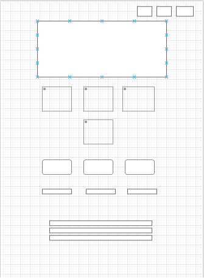
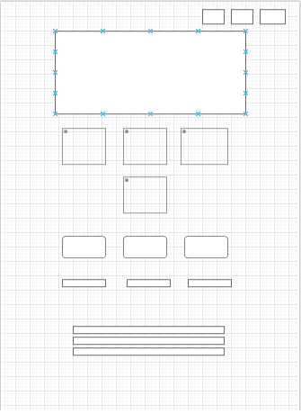

Wireframe
Mobile View:
Desktop View:

TechConnect Hub - This name represents a platform connecting technology enthusiasts, developers, and learners in one place to share resources, projects, and events.
Optional domain availability: techconnecthub.org
The site provides a hub for technology lovers by listing upcoming tech events, sharing coding tutorials, and offering a community forum for knowledge exchange and networking.
Mobile View:
Desktop View: